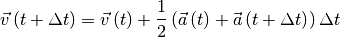

N-Body¶
A gas constisting of a number of particles, is an example of an N-Body problem. Here is an overview of the mathematical funtions used in NBody.
Lenneard-Jones potential¶
The Lennard-Jones potential is given as:
The evaluated forces is given as the geometrical derivative of the LJ potential:
![-\frac{\mathrm{d}}{\mathrm{d}\vec{r}}U_{\mathrm{vdw}}\left(r_{ij}\right)=F_{\mathrm{vdw}}\left(r_{ij}\right)=-4\varepsilon_{ij}\left[-\frac{12\sigma_{ij}^{12}}{r_{ij}^{13}}+\frac{6\sigma_{ij}^{6}}{r_{ij}^{7}}\right]](_images/math/957834b58d28f94b3c56fb99c995e5c42ca1f868.png)
Velocity-Verlet¶
The Velocity Verlet algorithm is a symplectic integrator. The positions of the particles is updated as:
